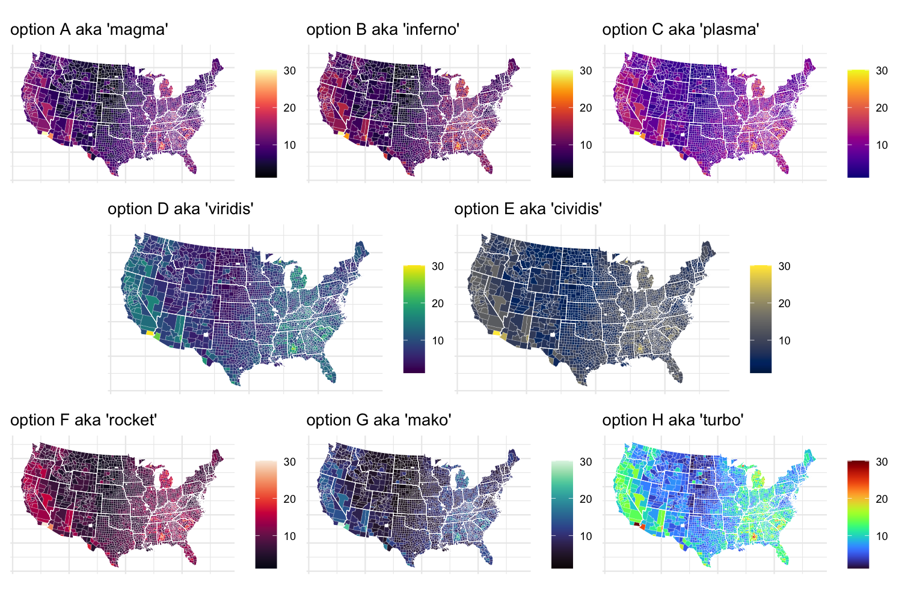

Description
viridis, and its companion package viridisLite provide a series of color maps that are designed to improve graph readability for readers with common forms of color blindness and/or color vision deficiency. The color maps are also perceptually-uniform, both in regular form and also when converted to black-and-white for printing.
viridisLite provides the base functions for generating the color maps in base R. The package is meant to be as lightweight and dependency-free as possible for maximum compatibility with all the R ecosystem. viridis provides additional functionalities, in particular bindings for ggplot2.
The color maps
The latest version of viridis comes with 8 different color maps, and they are all very pretty!!!

Installation
You can install viridis from CRAN by typing the following line in your R console:
install.packages("viridis")
library(viridis)If you prefer to install the development version from this GitHub repository, simply copy the following lines of code in your R terminal and it should install everything you need to use viridisLite on your computer:
if (!require("devtools"))
install.packages("devtools")
devtools::install_github("sjmgarnier/viridis")
library(viridis)References
The color maps viridis, magma, inferno, and plasma were created by Stéfan van der Walt (@stefanv) and Nathaniel Smith (@njsmith). If you want to know more about the science behind the creation of these color maps, you can watch this presentation of viridis by their authors at SciPy 2015.
The color map cividis is a corrected version of ‘viridis’, developed by Jamie R. Nuñez, Christopher R. Anderton, and Ryan S. Renslow, and originally ported to R by Marco Sciaini (@msciain). More info about cividis can be found in this paper.
The color maps mako and rocket were originally created for the Seaborn statistical data visualization package for Python. More info about mako and rocket can be found on the Seaborn website.
The color map turbo was developed by Anton Mikhailov to address the shortcomings of the Jet rainbow color map such as false detail, banding and color blindness ambiguity. More infor about turbo can be found here.